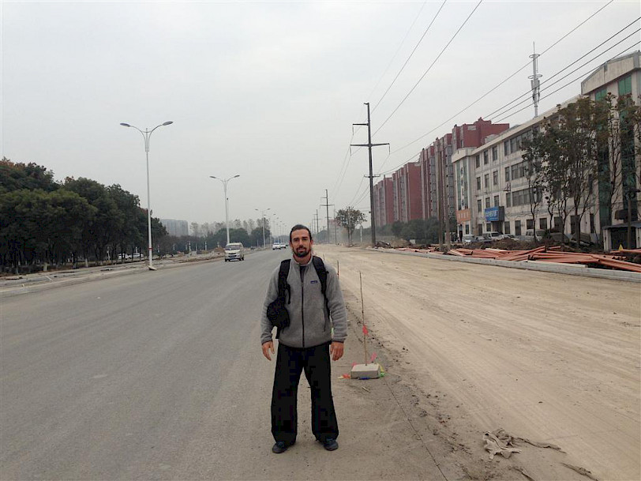
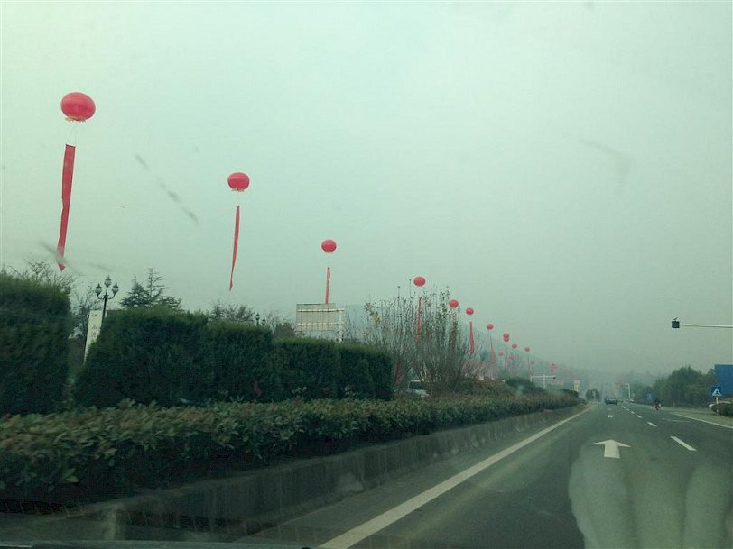

Week three in China. Still at it.
Here are some fresh insights:
* Nobody screams in China EVER. They just speak. The last time a scream was voiced here was during the Xia dynasty. Yeah.
* It's a common habit to present two or three prices in China: one for mainland Chinese, second for Hong Kong people. Third and most expensive - for foreigners. Makes you feel equal and most welcome.
* Driving in China - extreme sport. Statistically, there are less casualties in any war-hot-zone in the world than on Chinese roads daily. In my first two days here I witnessed five car accidents.

* The number of improvised vehicles is immense. Anything between a bicycle and a semi-trailer is available - from a motorcycle to a motor tricycle to a 'tok tok', etc,etc in all kinds of mutated, home-garage made variations. They are big on the electric bikes now. These are super cheap here but very dangerous and mostly to save up on battery life they will drive them at night with lights off.
* I found a charming thing here (yeah!!) - the Chinese will point out shyly if someone is attractive in their eyes. It's somewhat charming. They will simply say: 'this woman is beautiful' or 'you are handsome' and giggle.
* Throwing cigarettes at each other and banging glasses filled with liqueur multiple times around the dinner table - common Chinese pass times and signs of honoring someone. Try to decline. Just try... One of my biggest accomplishments here during my visit was that I didn't smoke and never sipped any alcohol. Actually - I never do and didn't plan to start here but at times it was rough.
* The mysterious and misunderstood practice of Bagua Zhang - kind of reminds me of coffee - strong, awakening, filled with hidden tastes but also addictive, can be overdone and become central dogma in a practitioner's approach. I enjoyed the daily discoveries dipped in pain of circle walking and other Bagua drills. This was only a small part of the movement vocabulary I was exposed to here.

* Many approaches inside traditional practices have been severely distorted and are misunderstood.
The use of various functional, physiological, historical and cultural prisms increase your chances of understanding what, when, if, how much and who. (that was, at least, my attempt at approaching this)
Many training exercises that were developed to enhance a certain attribute were mistaken for actual end goals, I suspect. Simple deductive work, really.
Other drills and practices took on their own culture, central dogma and stage where perhaps it was never intended to be so.
* We traveled to a Daoist monastery on Sunday. I was introduced to a 94 year old Daoist teacher and a Xing Yi master. I could not verify his age, of course, but the person who introduced me to him was my teacher - a man I trust and believe in. Mind you, in China, age is a big thing and is often exaggerated - taken out of proportion.
Still - this man was MOST impressive.
He was very sharp and moved well. He had a set of perfect teeth (a rarity in Industrial/rural China even for a 30+ year olds) and seemed to be very involved in all that is around him.
At a certain point one of the local Daoist students of this teacher asked me to 'bang arms' with the master - a common demonstration of martial aptitude. I must say - I was very hesitant.
After all - this is a 94 year old man....
I approached him carefully and as he offered his out reached arm went in to strike it very softly.
....
...
..
I met iron.
The student seeing my hesitation encouraged me: 'stronger!'.
I tried again stronger this time and again met iron. We repeated the hits 10-20 times each time increasing the force but in the end I was fearing my own arm will break. It was a most impressive demo. Not because of the iron forearms (common practice in China - various forms of conditioning for various body parts, using very simple stimulus to induce the adaptation) but because of his obvious bone density (a big thing with older population) in his advanced age, on a very limited protein diet, etc. But here it was again - Movement Practice COUNTS. Even in the face of age. Even in the face of restricted diets.

Right after us hitting arms together, the student suggested: 'feel the master's Dantien'. I put my hand on his lower abs and he projected the part below the belly button out. It was a somewhat abnormal manipulation of musculature but I've seen stuff like this before so I wasn't taken back by this demo.
Final thoughts for this week:
A very interesting week indeed. A week of hard work, a week of discoveries and insight. A week of discomfort but one that is manageable.
I started to feel my energy levels declining this week, mostly due to the almost unavoidable veg oils that I have removed from my diet for some time now. (with the exclusion of coconut oil)
Some plans for next week: wrapping up the knowledge base I acquired here, clearing up last questions that formed in my head, devoting more time to repeating certain basics in order to extract new question that might arise from them and resolve them. My plan for eating next week is to sneak into my pocket some New Zealand butter packs from breakfast in the hotel and incorporate them into my food, boosting up the saturated fat and taking in as little PUFA as possible. I am already sticking to the most hypo-toxic foods here as it is, relying on sheep meat soup, (MSG free) white rice, cooked veggies and thick skin fruits.
More on my Chinese adventure - later this week...
Stay on the move,
Ido.